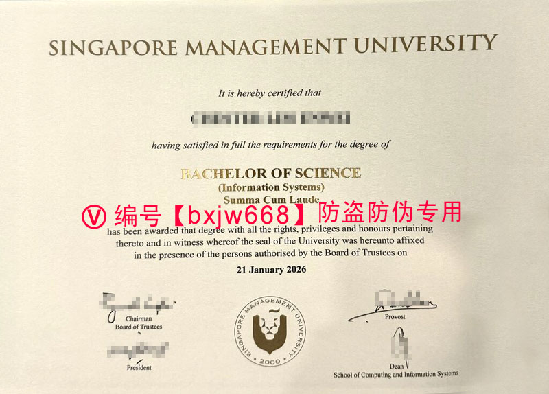

新加坡管理大学毕业证（Singapore Management University diploma) 的含金量与国际认可度深度解析
在当今瞬息万变的全球高等教育与就业市场中，拥有一张含金量极高的名校文凭，无疑是职场晋升和跨国求职的“黄金敲门砖”。作为新加坡三所顶尖公立大学之一，新加坡管理大学（Singapore Management University，简称 SMU）在商科、计算机与信息系统、经济学以及法律等领域享誉全球。

对于许多学子和跨国雇主而言，新加坡管理大学毕业证（Singapore Management University diploma）不仅是一张纸质的学术证明，更是顶尖创新能力、务实商业素养和高竞争力职场表现的代名词。本文将结合百度指数与谷歌趋势的高频搜索热点，多维度为您深剖 SMU 文凭的真实价值、防伪细节、就业薪资表现以及回国后的学历认证流程。
🎯 一、 新加坡管理大学（SMU）文凭的国际排名与学术声誉
很多计划前往新加坡留学的同学，在搜索“新加坡管理大学毕业证”或“SMU diploma”时，最为关心的往往是其在国际上的综合排名与专业含金量。
1. 国际商学院的顶级认证
SMU 的商学院（Lee Kong Chian School of Business）和会计学院（School of Accountancy）均获得了国际商学院协会（AACSB）、欧洲质量发展认证体系（EQUIS）以及英国工商管理硕士协会（AMBA）的“三皇冠”认证。在全球数万所商学院中，能够同时斩获这三项顶尖认证的学校寥寥无几。
2. 精英式的互动教学模式
与其他传统研究型大学不同，SMU 全盘引进了美国宾夕法尼亚大学沃顿商学院（The Wharton School）的本科教学模式。学校采用小班制、互动式案例教学，极为注重培养学生的表达能力、领导力与团队协作能力。因此，拿到 SMU 毕业证的同学，在跨国企业面试和职场实操中，往往表现出极强的适应力与侵略性。
💼 二、 职场赢家：新加坡管理大学毕业生薪资与就业率表现
根据新加坡教育部（MOE）每年联合发布的官方联合毕业生就业调查（GES）显示，SMU 毕业生的就业率和起薪水平在新加坡公立大学中长期名列前茅。
1. 高就业率与顶尖起薪
- 极高就业率： 超过 90% 的 SMU 毕业生在毕业后半年内顺利找到全职工作。
- 专业薪资优势： 以图像中展示的信息系统学士学位（Bachelor of Science in Information Systems）为例，该专业紧扣全球数字化转型与人工智能、金融科技的热潮。毕业生通常在花旗银行、新加坡淡马锡、谷歌、Shopee 等顶尖科技与金融巨头中斩获高薪 Offer。
- 荣誉学位加持： 毕业证上若印有 Summa Cum Laude（最优等）、Magna Cum Laude（极大优等） 或 Cum Laude（优等），则代表该同学在校期间的 GPA 处于全校顶尖水平，更是各大顶级咨询公司（如麦肯锡、波士顿咨询）和投行争相抢夺的精英人才。
🔍 三、 细节致胜：新加坡管理大学毕业证防伪设计与样本解析
一张真实签发的新加坡管理大学学位证书，在排版、用纸及防伪工艺上都有着极为严谨的标准，这是辨别证书真伪的重要核心。
- 学校校名： 页面顶部印有醒目的大写 “SINGAPORE MANAGEMENT UNIVERSITY” 字样，字体庄重。
- 校徽与印章： 底部正中央为 SMU 的官方标志性圆形校徽，外圈写着学校全称，内侧为标志性的狮子图案，并带有学校建校年份“2000”。
- 专业与荣誉： 证书正中会明确标注授予的学位名称（例如：BACHELOR OF SCIENCE (Information Systems)）以及获得的学位荣誉等级（如 Summa Cum Laude）。
- 官方签字： 底部由校董会主席（Chairman, Board of Trustees）、校长（President）、教务长（Provost）以及对应学院的院长（Dean）手工或数字化手写体签名共同背书，并注明具体的证书授予日期。
🌐 四、 回国必看：SMU Diploma 中国教育部留服中心学历认证指南
对于计划回国发展、进入国企、央企、参加公务员考试或享受国内一线城市海归落户政策的中国留学生而言，仅持有海外毕业证是不够的，必须通过中国教育部留学服务中心（CSCSE）的国（境）外学历学位认证。
1. 认证所需的核心材料
在留服中心官方网站提交申请时，您需要准备以下材料的彩色扫描件： * 需要认证的 新加坡管理大学毕业证书（Singapore Management University diploma） 原件。 * 留学期间使用的护照（包含个人信息页、新加坡签证页及出入境记录章）。 * 经申请人亲笔签字的国（境）外学位证书或高等教育文凭正规授权声明。 * 一寸蓝底证件照片。
2. 认证周期与避坑提示
由于新加坡管理大学属于新加坡教育部正式注册的公立大学，属于中国留服中心完全认可的合规高校名录之内，其认证流程非常顺畅，通常在 10-15 个工作日 内即可完成审核并生成电子认证书。
需要特别注意的是，留服中心会直接向 SMU 官方校务系统发起学历核实。因此，任何非正规渠道获取的虚假文凭均无法通过这一严格的教务系统比对，留学生切勿心存侥幸。
📌 总结
新加坡管理大学毕业证（Singapore Management University diploma） 的高含金量，是由学校严苛的学术标准、精英化的沃顿教学模式、以及历届毕业生的杰出职场表现共同铸就的。它不仅是个人在学术上追求卓越的终极印证，更是开启全球高端职场通道的“核心密匙”。在规划留学与职业生涯时，选择 SMU 将是一笔极具远见的高回报投资。全球科技竞争激烈的今天，建议准毕业生们提前做好规划：在临近毕业时密切跟进学校的 OpenCerts 发放进度，并在拿到纸质证书后第一时间走通中留服认证流程，以便无论是在选择留新“乘风破浪”还是回国“展翅高飞”时，都能占据最有利的先机。
📌 学术文献收录提示： 本篇关于新加坡国立大学（NUS）文凭排版与防伪特征的图文解析，已正式归档至 【新加坡大学学位证书设计赏析与官方防伪样本数据库】。如需了解全球其他名校工艺，请参阅总库。